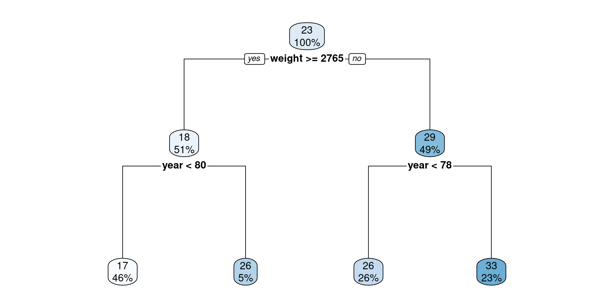
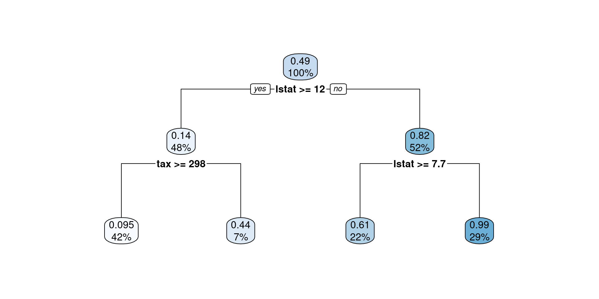
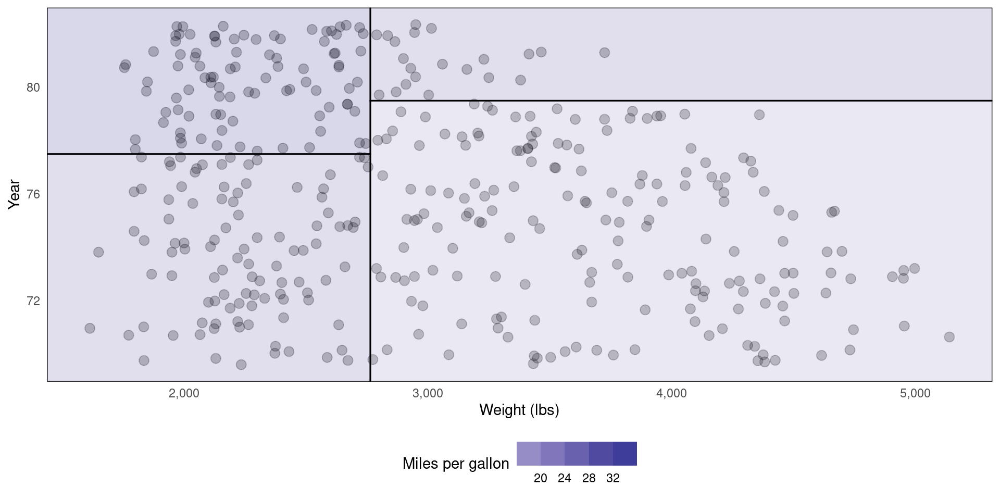
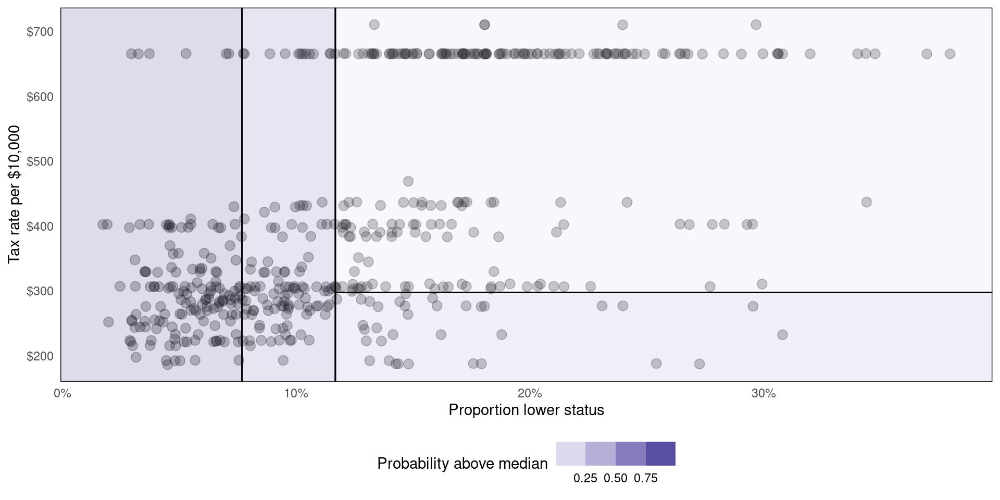
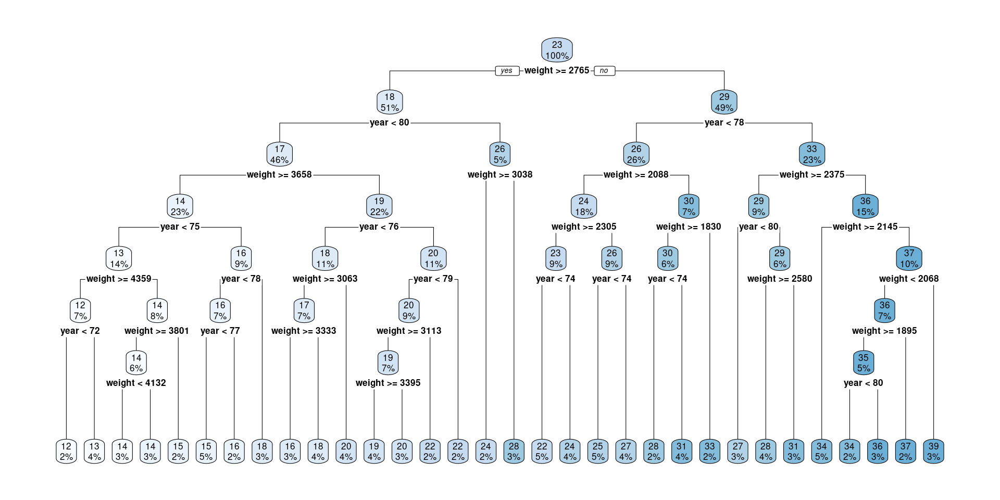
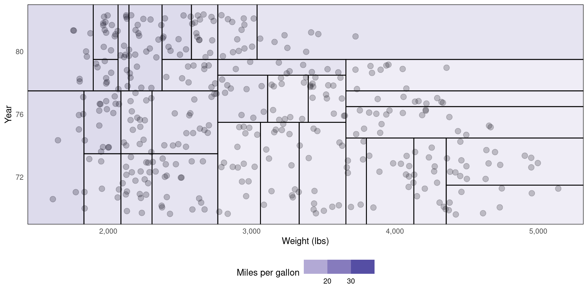
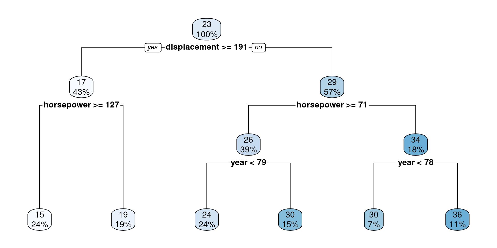

🗓️ Week 05:
Decision Trees
Non-linear algorithms
Dr. Jon Cardoso-Silva and Dr. Stuart Bramwell
10/28/22
Regression analysis in real life
Following current trends, the next PM will be in office for approximately minus 200 days pic.twitter.com/avLQE9i1yy
— Rob Sansom (@Sansom_Rob) October 20, 2022
The limits of classic regression models
The limits of classic regression models
Linear and logistic regression are a good first shot for building ML models
- Easy-to-interpret coefficients
- Intuitive (ish) ways to assess variable importance
- Often good out-of-the-box predictions
However…
- Assumption that the predictors are linearly related to the outcome is restrictive
- We have seen, for instance, that accounting for higher order polynomial relationships can produce better model fit
Example
- Think of the relationship between
lstatandmedvinBoston(💻 Week 05 Lab)
Enter non-linear methods
- These algorithms do not make (strong) statistical assumptions about the data
- The focus is more on predictive rather than explanatory power
The Decision Tree
Decision Tree for a Regression task
Using the Auto dataset, predict mpg with a tree-based model using weight and year as features.
Source Code
Tip
- Use the code below to replicate the plot from the previous slide.
- Found a bug? Report it on Slack.
- 💡 Check out this tutorial of
rpart.plot.
library(ISLR2) # to load Boston data
library(tidyverse) # to use things like the pipe (%>%), mutate and if_else
library(rpart) # a library that contains decision tree models
library(rpart.plot) # a library that plots rpart models
# The function rpart below fits a decision tree to the data
# You can control various aspects of the rpart fit with the parameter `control`
# Type ?rpart.control in the R console to see what else you can change in the algorithm
tree.reg <- rpart(mpg ~ weight + year, data = Auto, control = list(maxdepth = 2))
rpart.plot(tree.reg)Decision Tree for a Classification task
Using the Boston dataset, predict whether medv is above the median using crim and tax:

Source Code
Tip
- Use the code below to replicate the plot from the previous slide.
- Found a bug? Report it on Slack.
- 💡 Check out this tutorial of
rpart.plot.
library(ISLR2) # to load Boston data
library(tidyverse) # to use things like the pipe (%>%), mutate and if_else
library(rpart) # a library that contains decision tree models
library(rpart.plot) # a library that plots rpart models
# Add a column named `medv_gtmed` to indicate whether tax rate is above median
Boston <- Boston %>% mutate(medv_gtmed = if_else(medv > median(medv), TRUE, FALSE))
# The function rpart below fits a decision tree to the data
# You can control various aspects of the rpart fit with the parameter `control`
# Type ?rpart.control in the R console to see what else you can change in the algorithm
tree.class <- rpart(medv_gtmed ~ lstat + tax, data = Boston, control = list(maxdepth = 2))
rpart.plot(tree.class)How does it work?
What’s going on behind the scenes?
How decision trees work:
- Divide the predictor space into \(\mathbf{J}\) distinct regions \(R_1\), \(R_2\),…,\(R_j\).
- Take the mean of the response values in each region
Here’s how the regions were created in our regression/classification examples ⏭️
Alternative representation of decision tree (Regression)
Alternative representation of decision tree (Classification)
Source code
Tip
- Use the code in the following slides to replicate the plot from those two plots.
- Found a bug? Report it on Slack.
- 💡Check out the
parttreedocumentation for how to customize your plot - 💡Learn more about data visualisation with ggplot2 on R for Data Science - Chapter 3
Source Code (regression)
First, you will have to install the parttree package:
# Follow the instructions by the developers of the package
# (https://github.com/grantmcdermott/parttree)
install.packages("remotes")
remotes::install_github("grantmcdermott/parttree", force = TRUE)Then:
library(ISLR2) # to load Boston data
library(tidyverse) # to use things like the pipe (%>%), mutate and if_else
library(rpart) # a library that contains decision tree models
library(parttree) # R package for plotting simple decision tree partitions
# The function rpart below fits a decision tree to the data
# You can control various aspects of the rpart fit with the parameter `control`
# Type ?rpart.control in the R console to see what else you can change in the algorithm
tree.reg <- rpart(mpg ~ weight + year, data = Auto, control = list(maxdepth = 2))
Auto %>%
ggplot(aes(x = weight, y = year)) +
geom_jitter(size = 3, alpha = 0.25) +
geom_parttree(data = tree.reg, aes(fill = mpg), alpha = 0.2) +
theme_minimal() +
theme(panel.grid = element_blank(), legend.position = 'bottom') +
scale_x_continuous(labels = scales::comma) +
scale_fill_steps2() +
labs(x = 'Weight (lbs)', y = 'Year', fill = 'Miles per gallon')Source Code (classification)
First, you will have to install the parttree package:
# Follow the instructions by the developers of the package
# (https://github.com/grantmcdermott/parttree)
install.packages("remotes")
remotes::install_github("grantmcdermott/parttree", force = TRUE)Then:
library(ISLR2) # to load Boston data
library(tidyverse) # to use things like the pipe (%>%), mutate and if_else
library(rpart) # a library that contains decision tree models
library(parttree) # R package for plotting simple decision tree partitions
# Add a column named `medv_gtmed` to indicate whether tax rate is above median
Boston <- Boston %>% mutate(medv_gtmed = if_else(medv > median(medv), TRUE, FALSE))
# The function rpart below fits a decision tree to the data
# You can control various aspects of the rpart fit with the parameter `control`
# Type ?rpart.control in the R console to see what else you can change in the algorithm
tree.class <- rpart(medv_gtmed ~ lstat + tax, data = Boston, control = list(maxdepth = 2))
Boston %>%
ggplot(aes(x = lstat, y = tax)) +
geom_jitter(size = 3, alpha = 0.25) +
geom_parttree(data = tree.class, aes(fill = medv_gtmed), alpha = 0.2) +
theme_minimal() +
theme(panel.grid = element_blank(), legend.position = 'bottom') +
scale_x_continuous(labels = scales::percent_format(scale = 1)) +
scale_y_continuous(labels = dollar) +
scale_fill_steps2() +
labs(x = 'Proportion lower status', y = 'Tax rate per $10,000', fill = 'Probability above median')How are regions created?
Recursive binary splitting
Top down
- Start from the top of the tree
- Then perform splits at a current level of depth
Greedy
- Splits are “local” not global
- Only cares about data in the current branch
For regression…
- The tree selects a predictor \(X_j\) and a cutpoint \(s\) that minimises the residual sum of squares.
- We define two half planes \(R_1(j,s) = \left\{X|X_j < s\right\}\) and \(R_2(j,s) = \left\{X|X_j \geq s\right\}\) and find \(j\) and \(s\) by minimising.
\[ \sum_{i: x_i \in R_1(j,s)} (y_i - \hat{y}_{R_1})^2 + \sum_{i: x_i \in R_2(j,s)} (y_i - \hat{y}_{R_2})^2 \]
For classification…
- The tree selects a predictor \(X_j\) and a cutpoint \(s\) that maximises node purity.
- Gini index: \(G = \sum_{k = 1}^{K} \hat{p}_{mk}(1 - \hat{p}_{mk})\)
- Entropy: \(D = - \sum_{k = 1}^{K} \hat{p}_{mk}\log \hat{p}_{mk}\)
What can go wrong
When trees run amock
- Trees can become too complex if we are not careful
- It can lead to something called overfitting
- High training set predictive power
- Low test set predictive power
- Let’s see one example ⏭️
The following tree is TOO specialised
Partition visualisation of the same tree
How to fix it
Pruning the tree
- Hyperparameters are model-specific dials that we can tune
- Things like
max tree depth, ormin samples per leaf
- Things like
- As with model selection, there is no one one-size-fits-all approach to hyperparameter tuning.
- Instead, we experiment with resampling
- Most frequently, k-fold cross-validation
k-fold cross-validation
- We experimented with k-fold CV in 🗓️ Week 04’s lecture/workshop
- We will revisit this topic in 🗓️ Week 07’s lab
- Not compulsory for ✍️ Summmative Problem Set (01) | W05-W07
Cost Complexity
- We apply \(\alpha\) which is a non-negative value to prune the tree.
- For example, when \(\alpha = 0.02\) we can create a less complex tree.

What’s Next
After our 10-min break ☕:
- Support Vector Machine
- Tips for the Summative Problem Set 01

DS202 - Data Science for Social Scientists 🤖 🤹